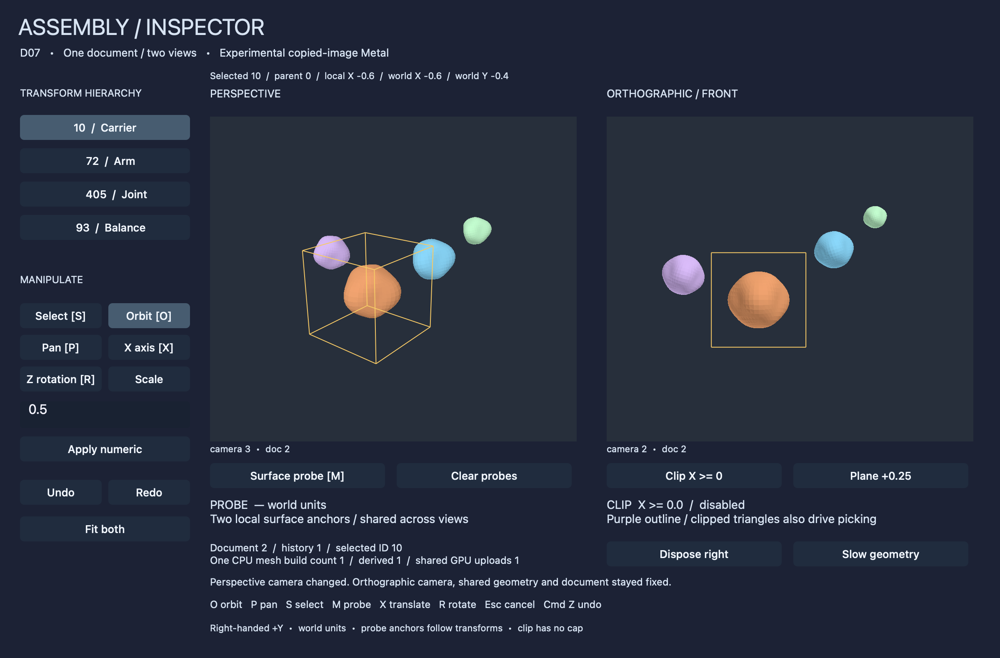
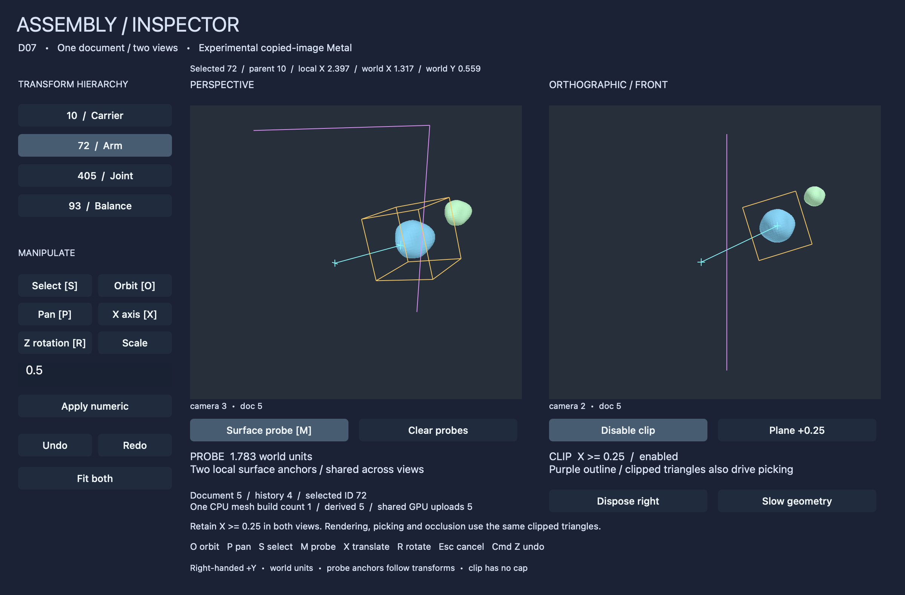
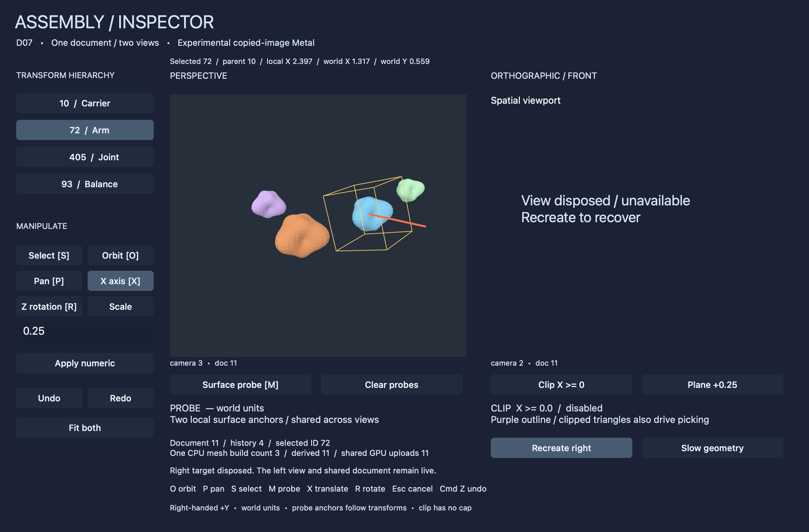

One assembly, two public views Action: Launch the assembly inspector Expected: Four stable IDs, a three-level hierarchy, perspective and orthographic targets sharing one geometry buffer
initial · offscreen-render · 2400 × 1580 pixels

Independent camera, shared document Action: Orbit only the perspective view Expected: Right camera revision remains unchanged; both views retain the same document and geometry
Parent transform preview Action: Select Arm in the hierarchy; drag its X handle in the right view Expected: Arm and Joint move together in both views; history remains unchanged
Commit hierarchy transform Action: Release the Arm drag Expected: One history entry; child local coordinates account for parent scale and Joint follows the composed transform
result · offscreen-render · 2400 × 1580 pixels
Shared surface measurement Action: Pick Carrier in perspective and Arm in orthographic Expected: Two local surface anchors produce the same world distance and cyan segment in both views
result · offscreen-render · 2400 × 1580 pixels
Shared clipping plane Action: Enable the X >= 0 plane Expected: Both targets omit the same half-space; clipped triangles also drive picking; no cap surface
result · offscreen-render · 2400 × 1580 pixels

Move the clipping plane Action: Advance the plane offset by 0.25 Expected: Both views update from one derived geometry rebuild/upload
Cancel without history Action: Send Escape through the native event queue Expected: Committed transforms and history are restored in both views
recovery · offscreen-render · 2400 × 1580 pixels
Native numeric input Action: Enter 0.25 via the native text callback, press Enter then Escape Expected: Same public operation validator and shared history as pointer manipulation
result · offscreen-render · 2400 × 1580 pixels
Stale worker result rejected Action: Undo numeric edit; request a delayed mesh, supersede it and poll its old completion Expected: Old completion is rejected; both views retain the last accepted mesh while the latest work remains pending
recovery · offscreen-render · 2400 × 1580 pixels

Independent view disposal Action: Dispose the right view Expected: Right image is removed; left target, document and GPU geometry remain usable
recovery · offscreen-render · 2400 × 1580 pixels
Recreate the right view Action: Recreate under its existing owner Expected: New right target consumes the surviving GPU geometry without another upload
recovery · offscreen-render · 2400 × 1580 pixels
Contact sheetReproduce
python3 examples/spatial-assembly/gallery.py
Real AppKit+Metal app content, cacheDisplay offscreen-render captures. Synthetic native event queue and native text callback replay; no physical input, human, IME, VoiceOver or compositor evidence. D05 performance/production gate remains OPEN.
Screenshots show recorded states. They do not establish latency, scientific accuracy, physical IME, screen-reader behavior, or human usability.